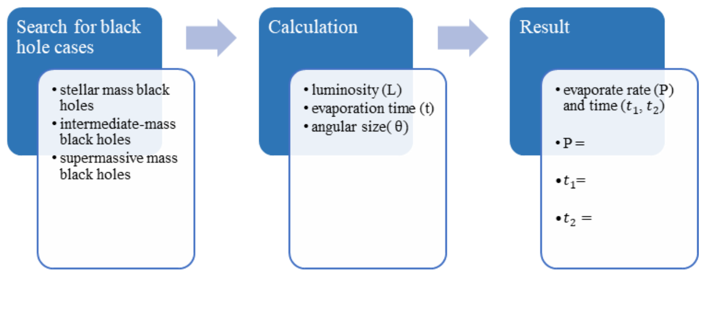

Black Hole Radiation Rate and Its Evaporation Time
黃莛語
Abstract
By using simplified formulas to calculate the required time for a black hole to evaporate, we can compare Hawking radiation effects on the black hole of different mass levels and determine whether the black hole has the possibility of being observed.
Research Purpose
- Extract the masses of 118 black holes (including stellar mass black holes, intermediate-mass black holes and supermassive black holes), calculate their radiation rate and evaporation time with the simplified formula to see how long a black hole will take to evaporate completely.
- Calculate the angular size of the black holes based on their surface area and the distance from the observer to find out the black holes that may be observed by the telescope.
Methodology
Conclusions and Future Work
- The radiation rate of a black hole is inversely proportional to the square of its mass. The larger the black hole mass, the lower its radiation rate, which means that the black hole is less likely to evaporate.
- The evaporation time of the black hole is much longer than the lifetime of the universe. It is difficult to observe the complete process of a black hole from generation to evaporation by using current technology.
- It is possible to know the size change of the black hole by measuring the change of its angular size, but the range of it that can be observed by the event horizon telescope is limited. Only five black holes in this research samples can meet this condition. Computer simulations and other methods for further research are still needed.